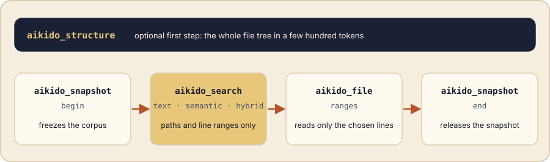
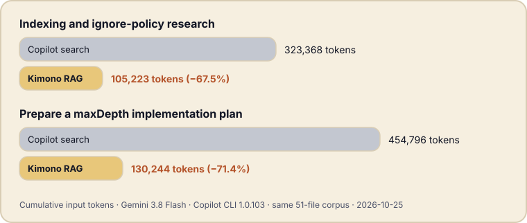

You ask an assistant to prepare a change in a project it has never seen. To understand it, the assistant opens file after file, and every file it opens is paid for again at each step of the conversation. Most of what it reads turns out to be irrelevant.
The idea in one picture
Kimono RAG MCP indexes a project on your machine and gives MCP-compatible assistants lexical and semantic search. The key design choice is in what comes back: file paths and line ranges first, not source text. The assistant then reads only the ranges it picked. It works with or without an AI-KIDO base, and indexing and embeddings run locally.

What you do in VS Code
You install the extension from the Marketplace, open your project, run MCP: List Servers and start Kimono. In your assistant’s chat, you enable its tools, then ask your question as usual:
Where is the ping endpoint handled in this project?The assistant does not walk through the files one by one. It answers by citing three places: src/api/ping.ts (line 1), src/index.ts (line 1) and docs/architecture.md (line 2). It then opens only those lines to explain the code to you. Nothing else was read, so nothing else was billed.
Under the hood
To find those three places, the assistant opened a frozen snapshot of your project, then ran a search. This is the reply Kimono RAG MCP sent back:
{"results":[
{"path":"src/api/ping.ts","ranges":[[1,1]]},
{"path":"src/index.ts","ranges":[[1,1]]},
{"path":"docs/architecture.md","ranges":[[2,2]]}
],"snapshotId":"cff9f88c-…"}Reading is a separate step that returns only the chosen lines, then the snapshot is released. Search is compact by default, and several independent queries can be grouped in a single call.
What we measured
The public benchmark report compares standard Copilot search (grep, glob, view) with Kimono RAG MCP on two repository tasks, using Gemini 3.8 Flash in Copilot CLI 1.0.103 on the same 51-file corpus.

- −67.5 %input tokens, indexing and ignore-policy research
- −71.4 %input tokens, maxDepth implementation plan
- −28.9 %elapsed time, research task (111.2 s to 79.1 s)
- −52.0 %elapsed time, planning task (175.2 s to 84.0 s)
In both Kimono RAG MCP sessions, the 8 search queries were grouped in 2 search calls, followed by 4 range reads, for 8 Kimono RAG MCP tool calls in total.
Try it
- Install Kimono RAG MCP from the Visual Studio Marketplace (VS Code 1.106 or newer, with a chat client that supports MCP).
- Open and trust your project folder, run MCP: List Servers, start Kimono and enable its tools in your chat client.
- Compare on your own task. The details are on the Kimono RAG MCP page.